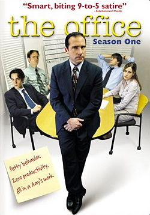

Season 1
The Office is an American television sitcom that aired on NBC from March 24, 2005, to May 16, 2013, lasting nine seasons.[1] It is an adaptation of the original BBC series of the same name and was adapted for American television by Greg Daniels, a veteran writer for Saturday Night Live, King of the Hill, and The Simpsons. It was co-produced by Daniels' Deedle-Dee Productions, and Reveille Productions (later Shine America), in association with Universal Television. The original executive producers were Greg Daniels, Howard Klein, Ben Silverman, Ricky Gervais, and Stephen Merchant, with numerous others being promoted in later seasons.
The series depicts the everyday lives of office employees in the Scranton, Pennsylvania branch of the fictional Dunder Mifflin Paper Company. To simulate the look of an actual documentary, it was filmed in a single-camera setup, without a studio audience or a laugh track. The series debuted on NBC as a midseason replacement and aired 201 episodes over the course of its run. The Office initially featured Steve Carell, Rainn Wilson, John Krasinski, Jenna Fischer, and B. J. Novak as the main cast; the series experienced numerous changes to its ensemble cast during its run. Notable stars outside the original main cast include Ed Helms, Mindy Kaling, and Ellie Kemper.